《模块化开发》
第一单元 模块化
一、 本单元教学目标：
1. 知识目标
（1） 了解js的模块化历程、规范
（2） 掌握模块化思想（解、造、用）
2. 能力目标
（1） 用模块化的思维管理业务和代码
二、 课时分配：
1. 第一课时： 课程内容导入
（1） 知识目标
理解网页开发三剑客（html,css,js）各自的作用
了解网页现代前端开发的新要求以及由此而反衬出的传统前端开发的问题
（2） 能力目标
掌握如何规避html页面引入多个js文件时的问题
2. 第二课时：什么是模块化
（1） 知识目标
掌握模块化概念
掌握模块化的解、造、用三步骤
（2） 能力目标
熟练使用模块化思维管理代码
三、 本单元概念图
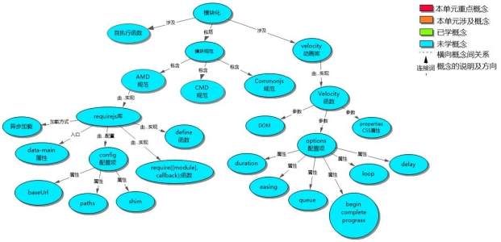
四、 教学过程脚本设计—第一课时
1. 授课流程图
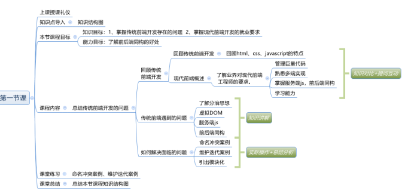
2. 知识结构图
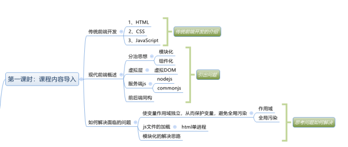
3. 目标关系图
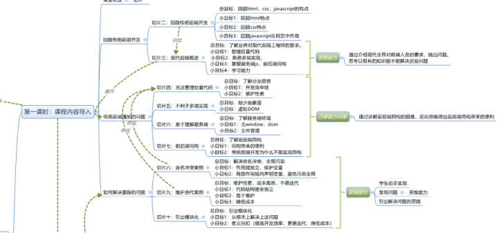
4. 每个脚本切片设计思路
内容 | 目标 | 设计亮点 | 时间 |
课堂礼仪 | 1、 提升学生气势，精神饱满 2、 增加团队意识 | 突出学院特色，强化学习信念 | 2min |
html css javascript | 了解标记语言的特点 | 通过英雄联盟游戏中的世界类比html |
min
|
了解层叠样式表 | 通过英雄联盟任务皮肤类比了解css样式 | ||
了解脚本语言对页面的意义 | 通过游戏中任务技能类比了解脚本作用 | ||
现代前端概述 | 总目标：了解业界对现代前端工程师的要求。 小目标1：管理巨量代码 小目标2：熟悉多端实现， 小目标3：掌握服务端js，前后端同构 小目标4：学习能力
| 讲解+提问方式 |
|
无法管理巨量代码 | 总目标：了解分治思想 小目标1：开发效率低 小目标2：维护性差 | 讲解+提问 |
|
不利于多端实现 | 总目标：缺少抽象层 小目标：虚拟DOM | 讲解+提问 |
|
难以理解服务端 | 总目标：了解服务端环境 小目标1：无window，dom 小目标2：文件管理
| 讲解+提问方式 |
|
前后端同构 | 总目标：了解前后端同构 小目标1：同构带来的便利 小目标2：传统前端开发为什么不能实现同构
| 讲解+提问 |
|
命名冲突案例 | 总目标：解决命名冲突、全局污染 小目标1：作用域独立，保护变量 小目标2：局部作用域内声明变量，避免污染全局
| 代码演示+提问+实操 |
|
迭代维护案例 | 总目标：维护性差，成本高昂，不易迭代 小目标1：代码结构健全独立 小目标2：易于维护 小目标3：降低成本 | 代码演示+提问+实操 |
|
引出模块化 | 总目标：引出模块化 小目标1：从根本上解决上述问题 小目标2：意义回扣（提高开发效率，更易迭代，降低成本 | 互动提问+总结 |
|
5. 脚本切片一：课堂礼仪
课堂模块 | 教学内容 | 教学标准 |
课堂礼仪
| 班长：起立!
| 1、提前30秒面带自信笑容走进教室，做课前准备工作 2、上课铃声响起 3、老师检查学生工装，整理工装速度及姿势
|
6. 脚本切片二：HTML
(1) 课堂模块 | 教学内容/台词 | 教学标准 |
html,css,javascript
| 师： (1) 同学们以前在哪里使用html？怎么使用的？ (2) 英雄联盟大家都玩过吧？现在是哪个赛季了？。 生：... 师： (1) 英雄联盟没玩过的同学总玩过王者荣耀吧？ (2) 相信大家都玩过 (3) 那大家有没有想过，html的标签相当于游戏世界里的什么？ 生：... 师： (1) 其实就是支撑起这个世界的骨架，比如河道，墙，草丛， (2) html里的这些标签也是一样，堆叠出一个骨架，在浏览器中打开如一个文档 (3) 那html是一种标记语言，通过标记符号来告诉浏览器要显示的内容。 师： 那css相当于游戏里的什么呢？ 生：... 师：对，就是皮肤，css是层叠样式表的意思，就是负责规定标签的颜色边框等样式的。 师：那javascript相当于游戏里的什么呢？ 生：... 师： (1) 相当于各种酷炫吊炸天的技能，即行为。 (2) 骨架、皮肤、技能三样具备基本就是一个完整的游戏了，html+css+javascript组合在一起就是一个完整的网页，但现实世界并不像游戏世界那般简单，互联网上有很多复杂的web应用，如百度、美团、饿了么等，仍如以前简单实用html,css,javascript来完成就左支右绌了。 |
总目标：回顾html、css、javascript的特点 小目标1：回顾html特点 小目标2：回顾css特点 小目标3：回顾javascript在网页中作用 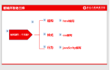 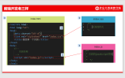 |
7. 脚本切片三：现代前端概述
课堂模块 | 教学内容/台词 | 教学标准 |
现当前端概述
| 师： （1）现代web应用业务庞大追求良好体验，导致代码总量非常大。 （2）如右图这么一个不算十分复杂的网站，大家知道光前端代码有多大吗？有多少文件吗？ 生：... 师：不算图片音频等，前端代码有23兆，960多个文件！（小目标1）
师：我们前期的学习中最头疼的是什么呢？ 生：... 师： (1) 我猜你们应该说浏览器兼容问题 (2) 其实和多端兼容比起来，浏览器兼容都不算什么问题了。 (3) 随着4G和未来的5G的广泛应用，越来越多各种型号的终端到了消费者手里，这些我们都要实现！（小目标2） 师：于是前端引入了流工作机制，提供了丰富的npm生态系统，然而这些都是基于nodejs的。所以我们得掌握nodejs这一服务端js。（小目标3） 师：并且各种前端框架层出不穷，angularjs,rectjs,vue,MINA...... 是不是觉得很酸爽？每个框架都有自己丰富的api，和生态，逼着我们不得不提升自己的什么能力？ 生：学习能力（小目标4）
| 总目标：了解业界对现代前端工程师的要求。 小目标1：管理巨量代码 小目标2：熟悉多端实现， 小目标3：掌握服务端js，前后端同构 小目标4：学习能力 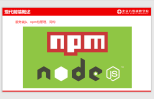 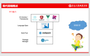 |
8. 脚本切片四：无法管理巨量代码
课堂模块 | 教学内容/台词 | 教学标准 |
无法管理巨量代码
| 师：记得以前有学习过关于文件管理的api吗？ 生：... 师：模块管理的api呢？ 生：... 师：回答不上来就对了，因为我们确实没学过 师：那现在我们需要不需要学呢？ 生：... 师：说不需要的同学注意了，以后早点起晚点睡，多去操场跑两圈。 师：不要问我为什么，以后去了工地就明白了，没个好身体不行。 生：...笑 师：大家挤过地铁吗？ 生：挤过 师：到地铁站前的繁忙路段，横七竖八的共享单车是不是很讨厌？ 生：对 师：所以说一个事物数量大了，又没有对应的管理办法会导致整个经济社会运行效率低下，难以维护。 |
总目标：了解分治思想 小目标1：开发效率低 小目标2：维护性差 |
9. 脚本切片五：不利于多端实现
课堂模块 | 教学内容/台词 | 教学标准 |
不利于多端实现
| 师：大家之前写的移动端网页在手机上打开过吗？给家人好友分享过你写的酷炫效果吗？ 生：... 师：难道你是先把文件发给家人，然后告诉他们用谷歌浏览器打开，按F12打开开发者界面，调整成手机预览模式再看吗？ 生：... 师：有没有想过你的代码能像app一样在手机上安装，打开，运行？ 生：咋弄啊？
师：暂时办不到，因为没有模块化，更不可能有抽象层。不过学完本门课程，就离实现这个目标很近了，到时你可以使用rect-native写个app，或者使用vue开发个小程序... | 总目标：缺少抽象层 小目标：虚拟DOM
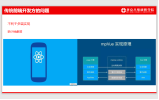 |
10. 脚本切片六：难以理解服务端
课堂模块 | 教学内容/台词 | 教学标准 |
难以理解服务端 | 师：我们写好的页面在哪里展示呢？ 生：...（电脑上，手机上） 师：对，更准确的说是在浏览器上，那安装有浏览器的这些电脑手机都在哪里呢？ 生：... 师：都在用户跟前，统称客户端，既然叫客户端，那相对的肯定有另一端，猜猜另一端叫啥？ 生：... 师：对，叫做服务端，那么好，服务端的页面被客户端拿来显示，那这些页面在服务端是以什么形式存放的？ 生：... 师：对，是以html文件css文件js文件的形式存放的。如右图，还存放着大量的web网站的业务代码，该项目是使用java语言写的，当然也可以使用其他语言，这些语言和js比有什么不同呢？ 生：... 师： (1) 对，没有window对象，没有dom对象，拥有大量操作文件和管理文件的api，而且这么多.java文件是如何相互引用共同完成一个web应用的业务呢？ (2) 其实现在javascript也可以运行在服务端了，叫做nodejs。只不过和我们在浏览器中看到的javascript不太一样，那究竟如何不同呢？ (3) 以我们现在的知识显然无法理解这些事情，不过不用急，学完本门课程，你就离其中奥妙很近了。 | 总目标：了解服务端环境 小目标1：无window，dom 小目标2：文件管理 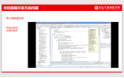 |
11. 脚本切片七：前后端同构
课堂模块 | 教学内容/台词 | 教学标准 |
前后端同构 | 师：通过刚才的讲解，我们知道一个完整的web应用应该有个服务端，服务端有一种实现叫nodejs。那么nodejs上运行的是那种语言呢？ 生：javascript 师：对，既然服务端能运行javascript，浏览器端也能运行javascript，那能不能将一部分代码抽离出来即跑在前端也跑在后端呢？这样是不是更加节省开发成本？ 生：... 师：但刚才不是说服务端和浏览器端是不同的呢嘛？怎么又能通用了呢？ 生：... 师：对，是有不同，我们规避掉一些问题，再适当修改下前端的javascript代码，符合nodejs的规范，它就可以运行在nodejs端，本门课程是前后端同构的第一步 |
总目标：了解前后端同构 小目标1：同构带来的便利 小目标2：传统前端开发为什么不能实现同构 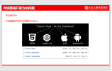 |
12. 脚本切片八：命名冲突案例
课堂模块 | 教学内容/台词 | 教学标准 |
命名冲突 | 师： 好，忘掉上边说的那些，我们开始学习本门课程，从传统前端开发在javascript方面产生的问题。其实很简单，只需通过几个小例子就可，是不是有点面试造飞机，工作拧螺丝的感觉？ 生：... 师： (1) 现在每个人写个js文件，将自己的姓名，年龄声明为变量，再封装一个函数，将这些信息打印到控制台，形式如右图 (2) 然后给这些js文件取个合适的名字发给我 (3) 写完了吗？ 生：... 师：看，我把你们的文件都引入到了我的html中，然后浏览器运行，怎么不够数呢？ 师：到底谁不够数呢？（看学生情绪，如果有走神的就将“不够数”对应一下，调节气氛） 生：... 师： (1) 很相信大家能看出来，这是命名冲突后者覆盖前者了 (2) 那大家有办法解决这个问题吗？ 生：... 师：对，就是将这些都写入自执行函数内保护起来 |
总目标：解决命名冲突、全局污染 小目标1：作用域独立，保护变量 小目标2：局部作用域内声明变量，避免污染全局 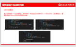 |
13. 脚本切片九：迭代维护案例
课堂模块 | 教学内容/台词 | 教学标准 |
迭代维护案例 | 师：好，同学们编写一个如右图的小例子？ 生：... 师：写完了吗？ 生：... 师：看，然后把第二行数据删掉，换一条已开班的数据上去且“报名中”颜色改为蓝色？ 生：... 师：没有折腾大家的意思（坏笑），我想问大家改动了几个地方 生：... 师：如果页面中有10个类似的列表，需要改动几个地方？ 生：... 师：这样复制粘贴式的复用效果好吗？有独立的解构吗？（小目标1） 生：... 师：好维护吗？好迭代吗？（小目标2） 生：... 师：是不是得多招个人来跟你一起复制粘贴？成本高不高？（小目标3） 生：... |
总目标：维护性差，成本高昂，不易迭代 小目标1：代码结构健全独立 小目标2：易于维护 小目标3：降低成本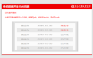
|
14. 脚本切片八：命名冲突案例
课堂模块 | 教学内容/台词 | 教学标准 |
命名冲突 | 师： 好，忘掉上边说的那些，我们开始学习本门课程，从传统前端开发在javascript方面产生的问题。其实很简单，只需通过几个小例子就可，是不是有点面试造飞机，工作拧螺丝的感觉？ 生：... 师： (4) 现在每个人写个js文件，将自己的姓名，年龄声明为变量，再封装一个函数，将这些信息打印到控制台，形式如右图 (5) 然后给这些js文件取个合适的名字发给我 (6) 写完了吗？ 生：... 师：看，我把你们的文件都引入到了我的html中，然后浏览器运行，怎么不够数呢？ 师：到底谁不够数呢？（看学生情绪，如果有走神的就将“不够数”对应一下，调节气氛） 生：... 师： (3) 很相信大家能看出来，这是命名冲突后者覆盖前者了 (4) 那大家有办法解决这个问题吗？ 生：... 师：对，就是将这些都写入自执行函数内保护起来 |
总目标：解决命名冲突、全局污染 小目标1：作用域独立，保护变量 小目标2：局部作用域内声明变量，避免污染全局 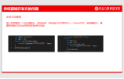 |
15. 脚本切片九：引出模块化
课堂模块 | 教学内容/台词 | 教学标准 |
引出模块化 | 师： （1）好，既然发现了这样那样的问题，而且碰到这样问题的人不在少数，于是都想着怎么解决，当然普通人是想着期盼着能有个新技术来解决这些烦心事。 （2）那我们能设想下这个新技术需要解决那些问题吗？ 生：... 师：是不是得更容易维护和迭代？ 生：... 师：得能大量代码吧？ 生：... 师：得能运行在服务端吧？另外还有什么要求？ 生：... 师： (1) 是他，是他，就是他，少年英雄小哪吒（唱出来）？ (2) 目前业界使用模块化思想解决以上问题，那新问题来了，什么是模块化呢？ (3) 请听下回分解 |
总目标：引出模块化 小目标1：从根本上解决上述问题 小目标2：意义回扣（提高开发效率，更易迭代，降低成本） |
五、 教学过程脚本设计—第二课时
1. 授课流程图
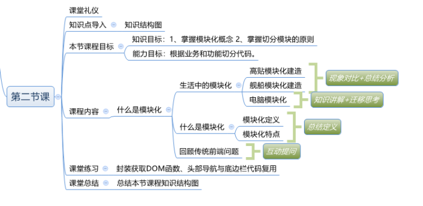
2. 知识结构图
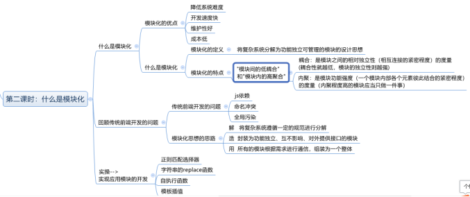
3. 目标关系图
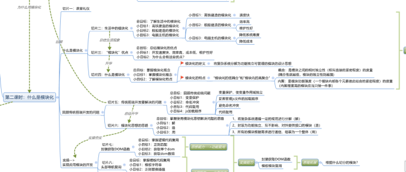
2.每个脚本切片设计思路
内容 | 目标 | 设计亮点 | 时间 |
课堂礼仪 | 总目标：了解生活中的模块化 1、提升学生气势，精神饱满 2、增加团队意识 | 突出学院特色，强化学习信念 | 2min |
生活中的模块化 | 总目标：了解生活中的模块化 小目标1：高铁建造的模块化 小目标2：舰船建造的模块化 小目标3：电脑主机的模块化 | 知识讲解+提问 | min |
“模块化”优点 | 总目标：总结模块化的优点 小目标1：开发速度快，效率高， 成本低，维护性好 小目标2：为什么会有这些优点？ | 提问式思路分析 |
|
什么是模块化 | 总目标：掌握模块化概念 小目标1：掌握模块化概念 小目标2：了解模块化特点 | 提问、互动 |
|
传统前端开发要的问题 | 总目标：回顾传统前端问题 小目标1：变量保护 小目标2：命名冲突 小目标3：代码复用 小目标4：js加载顺序 | 提问、总结 |
|
模块化思想的思路 | 总目标：掌握使用模块化思想解决问题的思路 小目标1：解 小目标2：造 小目标3：用 | 提问、总结 |
|
封装获取DOM函数 | 总目标：掌握逻辑代码复用 小目标1：正则匹配 小目标2：获取单个dom 小目标3：获取dom数组 | 代码演示 |
|
头部导航复用 | 总目标：掌握模板代码复用 小目标1：模板字符串 小目标2：正则替换插值 | 代码演示 |
|
底边栏复用 | 总目标：掌握将不同模块组装成页面 小目标1：加载顺序 | 代码演示 |
|
16. 3.脚本切片一：课堂礼仪
课堂模块 | 教学内容 | 教学标准 |
课堂礼仪
| 班长：起立!
| 1、提前30秒面带自信笑容走进教室，做课前准备工作 2、上课铃声响起 3、老师检查学生工装，整理工装速度及姿势
|
4. 脚本切片二：生活中的模块化
课堂模块 | 教学内容/台词 | 教学标准 |
生活中的模块化 | 师：中国高铁世界领先，到底是什么领先呢？技术还是规模？ 生：... 师： (1) 大家七嘴八舌的统计需要中国高铁出来一统下江湖 (2) 中国高铁在技术上与德日等并驾齐驱，但在规模和运营上是世界领先 (3) 2017世界高铁总里程是3.7万公里，中国独占2.5万公里，是其他国家总里程的总和的两倍 (4) 而2009年时才仅有0.5万公里，是什么技术使我们短短8年就建造了2万公里的高铁呢？ 生：... 师：模块化建造，桥梁、垫片、钢轨等在工厂作为单独模块造好，拉到工地使用右图中的机械组装在一起即可，能不快吗？ 师：这两年还有什么建造的速度飞快，俗称“下饺子”呢？ 生：... 师：对，就是海军舰船 师：2018年一年中国下水大型作战舰艇25艘 师：第知道整个法国海军有多少大型作战舰艇吗？ 生：... 师：我也不知道，但军迷圈子里流传一个结论，中国四年就可建造一个法国海军，而且没有人反驳，可见中国海军舰艇建造速度之快 师：张召忠将军做节目说中国现在采用模块化造舰技术，拿舰塔和厕所比的例子，就是整个舰塔是个模块，早好以后拉到现场组装。不仅速度快，而且作战时易维修，比如厕所被炮弹击伤了，整个拆下来再放一个进去就好了。 师：同学们身边还有什么模块化的例子吗？ 生：... 师：你们面前是什么？不要看我和黑板...。看电脑！ 师： (1) 我电脑主机内有电源、CPU、主板、硬盘等 (2) 这些都是独立的模块，之间通过总线等连接 (3) 每个模块为主机提供特定的功能，大概率是由不同的厂商生产，pc厂商买来组装到一起再卖给消费者，比如中国最大的外国电脑元器件组装厂---联想就是干的这个活 (4) 这个难度大吗？ (5) 其实我们按着教程也能轻松组装一台电脑 (6) 所以这样的设计有什么好处呢？ 生：... 师： (1) 首先降低了系统的复杂度吧 (2) 易维护吧，哪坏换哪。
|
总目标：了解生活中的模块化 小目标1：高铁建造的模块化 小目标2：舰船建造的模块化 小目标3：电脑主机的模块化 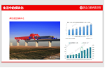 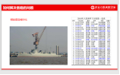
|

5. 脚本切片三：模块化的优点
课堂模块 | 教学内容/台词 | 教学标准 |
模块化的优点 | 师：首我们来总结一下模块化的优点 生：... 师：不要懵，想一下中国高铁里程的碾压优势说明啥？ 生：... 师：快吧？效率高吧？想一下战舰厕所坏了，换一个就行，说明啥？ 生：... 师：易维护吧？ 生：... 师：又快又易维护说明啥？ 生：... 师：成本低 师：为什么会有这些优点呢？想一下舰船的例子，如果厕所不是完全独立的模块而是焊接或直接铸在甲板上的，还能随时换掉吗？ |
总目标：总结模块化的优点 小目标1：开发速度快，效率高，成本低，维护性好 小目标2：为什么会有这些优点？
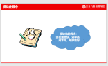
|
6. 脚本切片四：什么是模块化
课堂模块 | 教学内容/台词 | 教学标准 |
什么是模块化 | 师：优点都总结出来了，是否可以给模块化下个定义？ 生：... 师：首先他是一种设计思想 师：然后循序渐进的来，电脑主机的模块化使我们一个没有什么专业知识的人也能驾驭主机的硬件系统，说明什么？ 生：... 师：说明模块化是切分复杂系统降低难度的？舰船的厕所就是用来如厕的，电脑的硬盘是给系统提供持久存储功能的，它们都给系统提供特定的功能说明什么？ 生：... 师：功能独立，那厕所坏了换厕所，硬盘坏了换硬盘说明什么呢？ 生：... 师：易管理易维护，现在可以给模块化下个概念了吧？ 生：... 师：将复杂系统分解为功能独立，易管理易维护的模块的设计思想 |
总目标：掌握模块化概念 小目标1：掌握模块化概念 小目标2：了解模块化特点 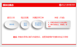
|
7. 脚本切片五：传统前端开发要解决的问题
课堂模块 | 教学内容/台词 | 教学标准 |
传统前端开发要解决的问题 | 师：现在我们学会了模块化的概念，理解了模块化的思想，那让我们回忆一下传统前端面临的问题，看能不能解决它们 生：... 师： (1) 能不能有效管理巨量代码？ (2) 能不能做到多端实现？ (3) 能不能帮助理解掌握服务端nodejs的包结构？ (4) 能不能极大的增强我们学习新框架的能力？ 生：... 师：这些问题需要更高级的工具链和生态支持，现在仍解决不了。 师：但命名冲突、维护性差、不易迭代的问题呢？ 生：... 师：显然是可以用模块化思维来解决这些问题的，具体思路下边讲解 | 总目标：回顾传统前端问题 小目标1：变量保护 小目标2：命名冲突 小目标3：代码复用 小目标4：js加载顺序 小目标5：无法实现前端工程化 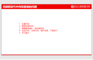
|
8. 脚本切片六：模块化思想的思路
课堂模块 | 教学内容/台词 | 教学标准 |
模块化思想的思路 | 师： (1) 回忆一下模块化的概念，将复杂系统分解为功能独立，易管理易维护的模块的设计思想 (2) 如何用这个思想去解决问题呢？ 生：... 师： (1) 简单总结分三步：解、造、用 (2) “解”就是将复杂系统切分 (3) “造”就是将切分出来的功能或业务使用符合规范的代码实现 (4) “用”就是按照规范将造出来的模块组装到一起 师：其中的关键是如何分解？ 生：... 师：从功能方面分解，从业务方面分解 | 总目标：掌握使用模块化思想解决问题的思路 小目标1：解 小目标2：造 小目标3：用 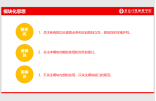
|
9. 脚本切片七：封装获取DOM的函数
课堂模块 | 教学内容/台词 | 教学标准 |
封装获取DOM的函数 | 师： (1) 我们编写页面的过程中但凡涉及DOM操作不免总要先获取DOM，所以获取DOM操作的重复性和独立性都很高，所以可以将其切分出来还是比较合适的。 (2) 根据模块化思想解决问题的思路，第二步应该做什么呢？ 生：... 师：对，就是“造”，就是选择合适的方式实现它。 生：... 师：我们选择自执行函数实现获取单个DOM的逻辑，为什么这么做呢？ 生：... 师： (1) 可以保护变量不被更改 (2) 辅助变量只用声明一次，节省内存 师：接下来第三步做什么呢？ 生：... 师：就是“用”，问题是现在我们并不知道别人怎么用，在哪用，所以只要抛出接口，供使用者调用即可。
|
总目标：掌握逻辑代码复用 小目标1：正则匹配 小目标2：获取单个dom 小目标3：获取dom数组 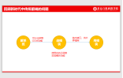 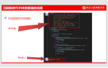
|
10. 脚本切片八：头部导航复用
课堂模块 | 教学内容/台词 | 教学标准 |
头部导航复用 | 师：一个网站的导航经常在多个页面复用，以我们现在所学知识，应该怎么实现这个复用呢？ 生：... 师：能感觉到麻烦吗？ 生：... 师：不仅麻烦，还增加了项目的代码量，如果标签、样式、逻辑散落在页面的不同部分，还容易出bug，有什么办法解决这个问题吗？ 生：... 师： (1) 对，就是将其封装为一个模块，向外抛出接口 (2) 愿意在哪里使用在哪里调用即可，这样对使用者和编写者都方便 (3) 既然对大家都好，我们为什么不这样做呢？ |
总目标：掌握模板代码复用 小目标1：模板字符串 小目标2：正则替换插值
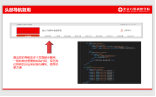
|
11. 脚本切片九：底边栏复用
课堂模块 | 教学内容/台词 | 教学标准 |
底边栏复用 | 师：一个网站的底边栏也经常在多个页面复用，以我们现在所学知识，应该怎么实现这个复用呢？ 生：... 师：有了导航复用的经验，具体模块实现就不赘述了。 师：我现在想问的是到目前为止我们已经封装了三个模块，它们在引用到页面时有顺序要求吗？ 生：... 师： (1) 导航和底边栏模块使用的了获取DOM模块，必须在其后引用 (2) 但导航和底边栏之间并无依赖，所以它们之间没有顺序要求。 |
总目标：掌握将不同模块组装成页面 小目标1：加载顺序
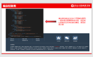
|